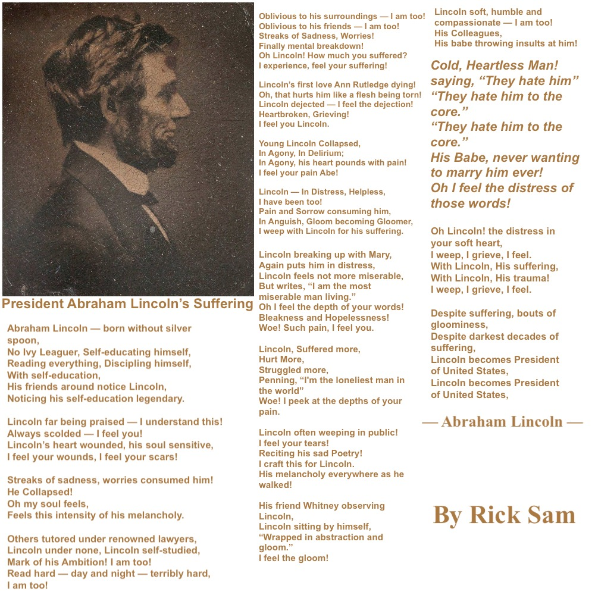
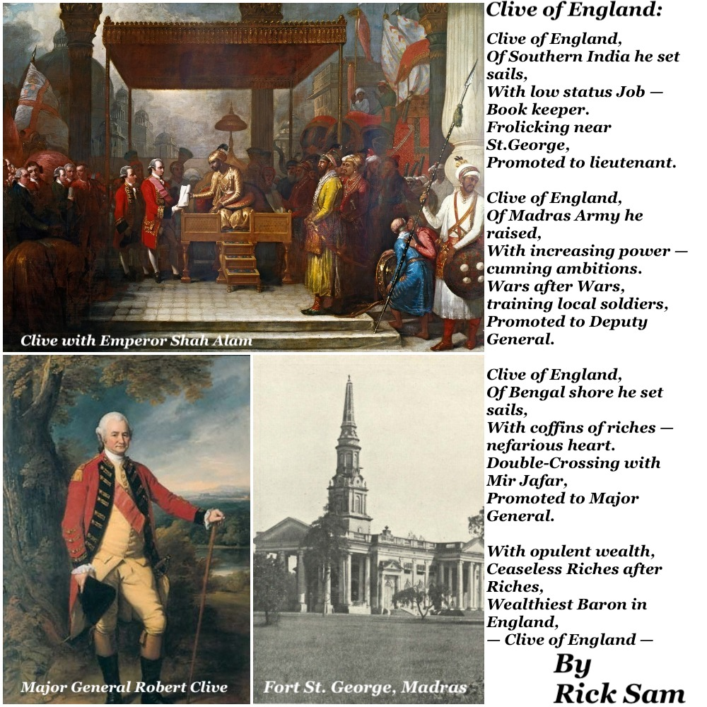
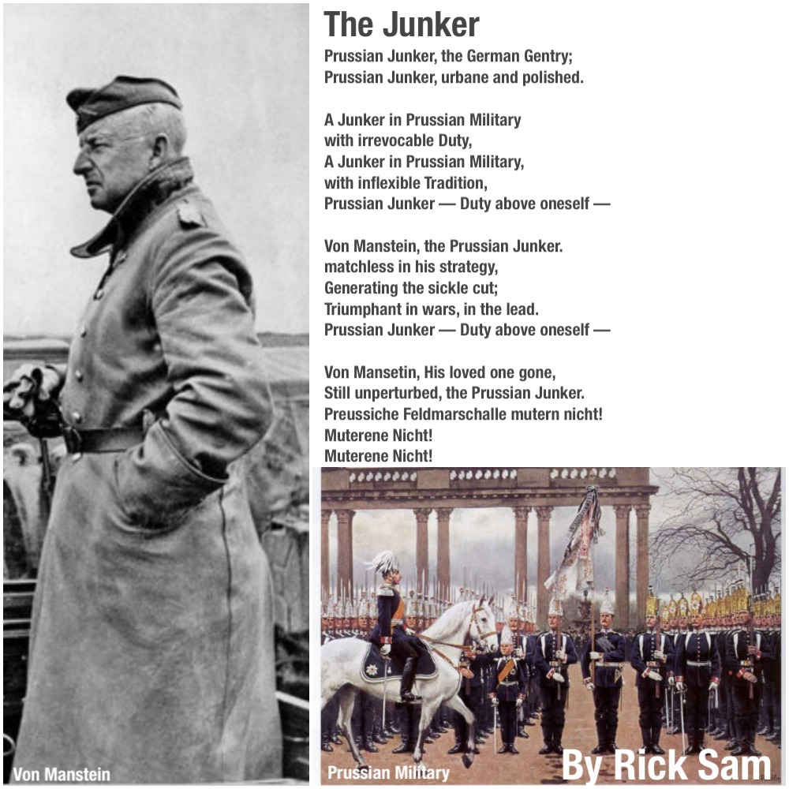
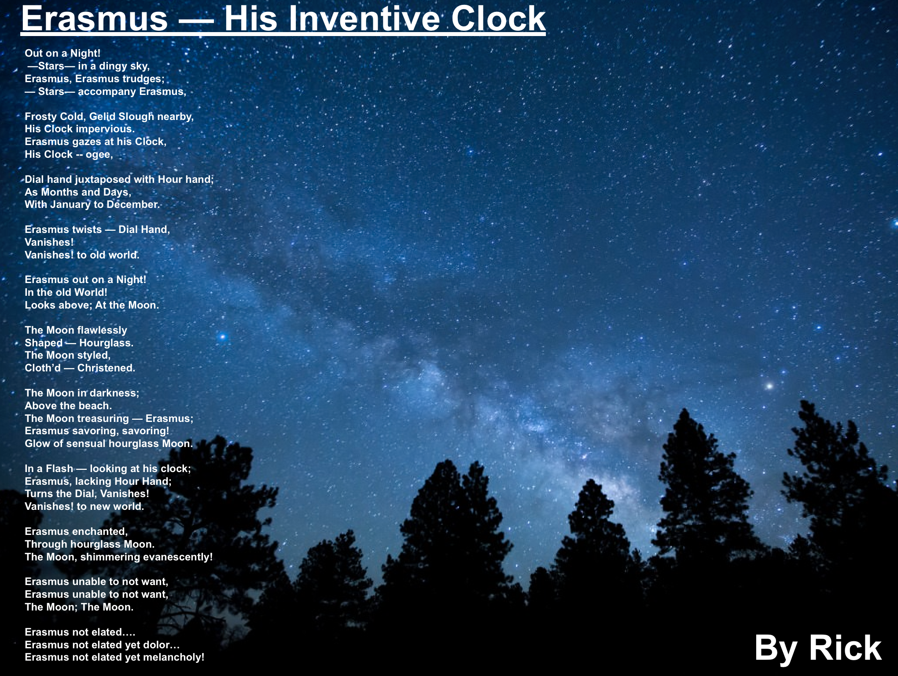
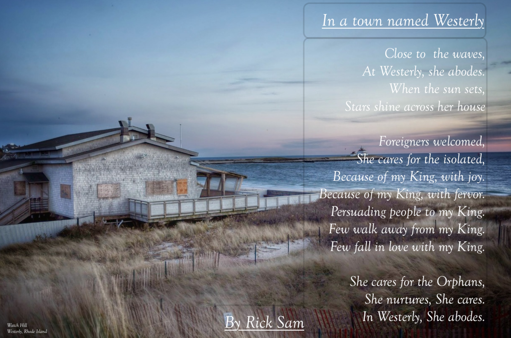
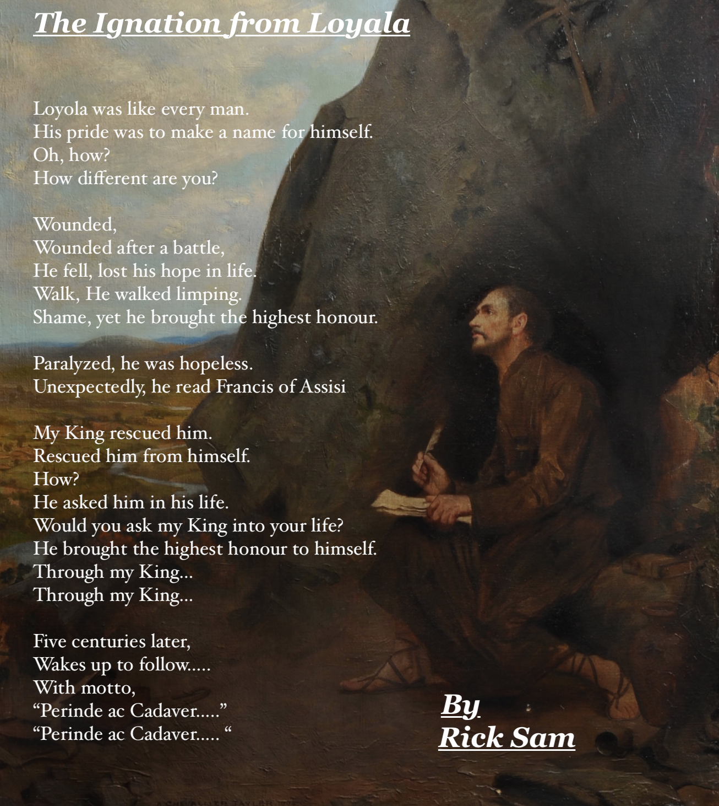
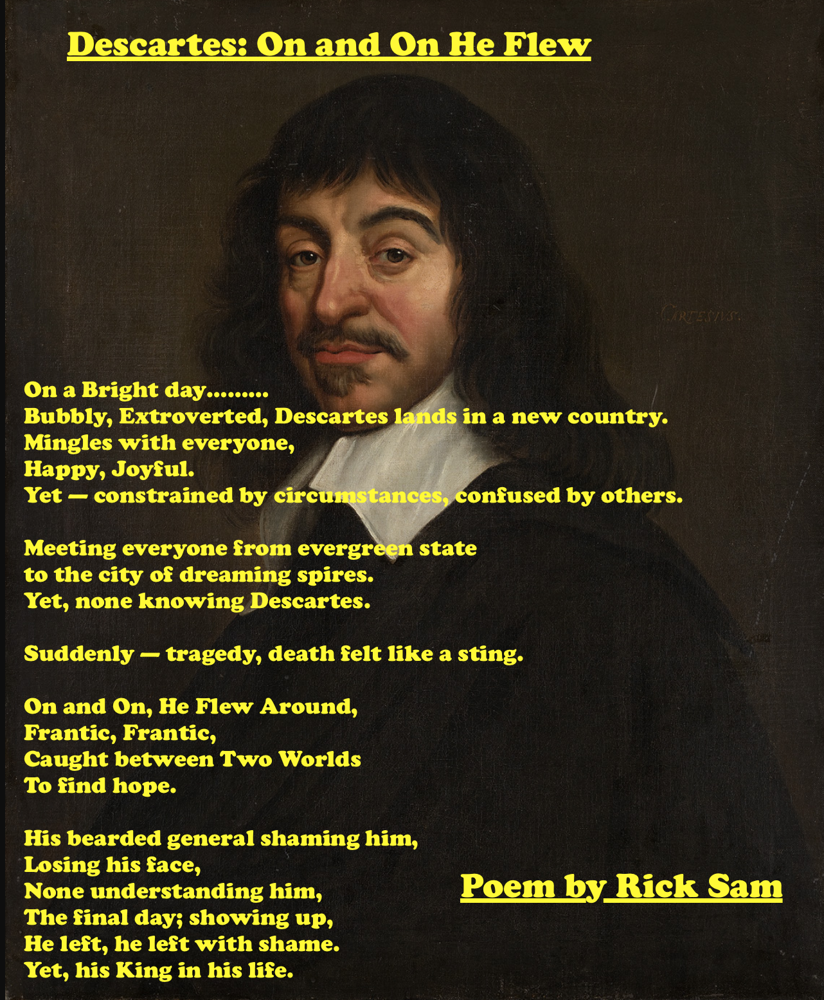
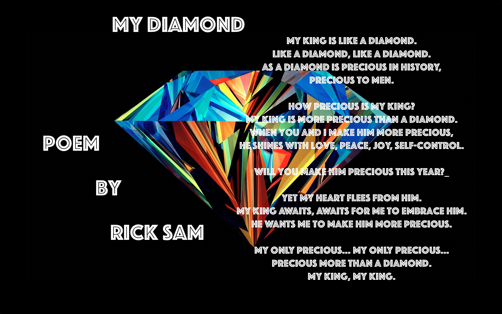

My Poems
I write poems, sporadically. I average about 6 poems per year.
Growing up in Tamil Nadu; I never imagined, one day I would enjoy crafting poems.
Poems were boring, not worth my time.
Perhaps, you might think the same?
Poems help you to reflect and capture meaningful experiences of your life.
How I started writing Poems?
My Journey in writing poetry started in 2014.
One Evening; I was walking to campus to meet a friend.
We planned to have dinner at the dining hall.
My experience walking to campus was rich, stirring, vivid and memorable. I decided to capture the memory through poetry.
Thus, I started my journey to write poetry. I write about places, people, philosophy. I try to keep them simple.
Read them and Enjoy!
- Jan 30, 2020
President Abraham Lincoln’s Suffering:

Abraham Lincoln — born without silver spoon,
No Ivy Leaguer, Self-educating himself,
Reading everything, Discipling himself,
With self-education,
His friends around notice Lincoln,
Noticing his self-education legendary.
Lincoln far being praised — I understand this!
Always scolded — I feel you!
Lincoln’s heart wounded, his soul sensitive,
I feel your wounds, I feel your scars!
Streaks of sadness, worries consumed him!
He Collapsed!
Oh my soul feels,
Feels this intensity of his melancholy.
Others tutored under renowned lawyers,
Lincoln under none, Lincoln self-studied,
Mark of his Ambition! I am too!
Read hard — day and night — terribly hard,
I am too!
Oblivious to his surroundings — I am too!
Oblivious to his friends — I am too!
Streaks of Sadness, Worries!
Finally mental breakdown!
Oh Lincoln! How much you suffered?
I experience, feel your suffering!
Lincoln’s first love Ann Rutledge dying!
Oh, that hurts him like a flesh being torn!
Lincoln dejected — I feel the dejection!
Heartbroken, Grieving!
I feel you Lincoln.
Young Lincoln Collapsed,
In Agony, In Delirium;
In Agony, his heart pounds with pain!
I feel your pain Abe!
Lincoln — In Distress, Helpless,
I have been too!
Pain and Sorrow consuming him,
In Anguish, Gloom becoming Gloomer,
I weep with Lincoln for his suffering.
Lincoln breaking up with Mary,
Again puts him in distress,
Lincoln feels not more miserable,
But writes, “I am the most miserable man living.”
Oh I feel the depth of your words!
Bleakness and Hopelessness!
Woe! Such pain, I feel you.
Lincoln, Suffered more,
Hurt More,
Struggled more,
Penning, “I'm the loneliest man in the world”
Woe! I peek at the depths of your pain.
Lincoln often weeping in public!
I feel your tears!
Reciting his sad Poetry!
I craft this for Lincoln.
His melancholy everywhere as he walked!
His friend Whitney observing Lincoln,
Lincoln sitting by himself,
“Wrapped in abstraction and gloom.”
I feel the gloom!
Lincoln soft, humble and compassionate — I am too!
His Colleagues,
His babe throwing insults at him!
Cold, Heartless Man! saying, “They hate him”
“They hate him to the core.”
“They hate him to the core.”
His Babe, never wanting to marry him ever!
Oh I feel the distress of those words!
Oh Lincoln! the distress in your soft heart,
I weep, I grieve, I feel.
With Lincoln, His suffering,
With Lincoln, His trauma!
I weep, I grieve, I feel.
Despite suffering, bouts of gloominess,
Despite darkest decades of suffering,
Lincoln becomes President of United States,
Lincoln becomes President of United States,
— Abraham Lincoln —
Author: Rick Sam
Date: January 30, 2020
© You may not use it without the author's permission.
To the reader:
Regardless of your socio-economic status, I implore you to read high-quality literary works. Your attention needs to be engaged with solid content, not fleeting pictures, images. Without such effort, your thoughts cannot raise higher, cannot coherently understand or form a thought.
One of the most emotionally draining literary work, that I’ve written. This is the second work after — Grim Reaper. I wrote Grim Reaper, few years ago. Grim Reaper, unfortunately had put fear in one of the readers.
I had paucity of words, gasping each moment for feelings, words to describe Abraham Lincoln, needing to understand depth of Abraham Lincoln’s mind. He was called Gorilla, et cetera.
Comments: Abraham Lincoln is one of the most popular President in American History. This piece explores his main attributes of himself — his suffering, which was the most distinguishing mark of him.
- Jan 23, 2020
Clive of England:

Clive of England,
Of Southern India he set sails,
With low status Job — Book keeper.
Frolicking near St.George,
Promoted to lieutenant.
Clive of England,
Of Madras Army he raised,
With increasing power — cunning ambitions.
Wars after Wars, training local soldiers,
Promoted to Deputy General.
Clive of England,
Of Bengal shore he set sails,
With coffins of riches — nefarious heart.
Double-Crossing with Mir Jafar,
Promoted to Major General.
With opulent wealth,
Ceaseless Riches after Riches,
Wealthiest Baron in England,
— Clive of England —
Author: Rick Sam
Date: Jan 23, 2020
Comments: Wrote this recall some British Raj in Tamil Nadu.
© You may not use it without the author's permission.
References:
The above poetry is concise. Clive has been analyzed in contrasting ways.
As a General he was successful. He is credited by historians for the new Empire.
He’s directly responsible for English East India company’s expansion in India.
Meanwhile, other areas of his life, it could be challenged. Write to me, if you want to contribute.
Jan 15, 2020
Prussian Junker:

Prussian Junker, the German Gentry;
Prussian Junker, urbane and polished.
A Junker in Prussian Military
with irrevocable Duty,
A Junker in Prussian Military,
with inflexible Tradition,
Prussian Junker — Duty above oneself —
Von Manstein, the Prussian Junker.
matchless in his strategy,
Generating the sickle cut;
Triumphant in wars, in the lead.
Prussian Junker — Duty above oneself —
Von Mansetin, His loved one gone,
Still unperturbed, the Prussian Junker.
Preussiche Feldmarschalle mutern nicht!
Muterene Nicht!
Muterene Nicht!
Comments: Wrote this during my musings of Prussian history.
References:
The above poetry is not complex.
It needs some understanding of Prussia,
German History and Prussian military tradition.
I found Socio-Economic questions within history quite intriguing.
It’s fascinating to reflect upon generational shift of socio-economic communities.
Terms:
-Von Mulke, the actualizer of Clausewitz during Franco-Prussian War.
-Von Manstein, the adept Strategist.
-Junker i.e Junka (Yunka) - Social class in Prussia.
(Prussian Field Marshall do not mutiny) - i.e do not revolt against authority. Muterene Nicht! - Do not Mutiny!
If you want to learn more:
Caste and Capitalism in Colonial India: The Nattukottai Chettiars
by David West Rudner.
Lost Victories: The War Memoirs of Hitler's Most Brilliant General
- Nov 17, 2019
Downtown in Westerly Again:

She abodes,
Walks across to work.
Animated by paperwork,
Full of life, nurturing her flowers.
Steaming Meals, At Westerly.
Steaming Meals, She Delights.
At Westerly for decades,
Flourishing.
Always, full of life,
In Westerly She Abode.
Always, full of life,
In Westerly She Abodes.
Thirty minutes to the Ivory Tower,
She cares for the un-cared,
Thirty minutes from the Ivory Tower,
She cares for Westerly.
Because of my — KING.
Comments: Crafted to update
previous Poetry on Westerly.
Ivory Tower: caricature of Academia.
- Nov 13, 2019
Erasmus - His Clock:

Out on a Night!
—Stars— in a dingy sky,
Erasmus, Erasmus trudges;
— Stars— accompany Erasmus,
Frosty Cold, Gelid Slough nearby,
His Clock impervious.
Erasmus gazes at his Clock,
His Clock -- ogee,
Dial hand juxtaposed with Hour hand;
As Months and Days,
With January to December.
Erasmus twists — Dial Hand,
Vanishes!
Vanishes! to old world.
Erasmus out on a Night!
In the old World!
Looks above; At the Moon.
The Moon flawlessly
Shaped — Hourglass.
The Moon styled,
Cloth’d — Christened.
The Moon in darkness;
Above the beach.
The Moon treasuring — Erasmus;
Erasmus savoring, savoring!
Glow of sensual hourglass Moon.
In a Flash — looking at his clock;
Erasmus, lacking Hour Hand;
Turns the Dial, Vanishes!
Vanishes! to new world.
Erasmus enchanted,
Through hourglass Moon.
The Moon, shimmering evanescently!
Erasmus unable to not want,
Erasmus unable to not want,
The Moon; The Moon.
Erasmus not elated….
Erasmus not elated yet dolor…
Erasmus not elated yet melancholy!
Written to appreciate:
-The Poet, Inventor, Physician —Erasmus Darwin.
He crafted sagacious poetry for Chrislyn.
Life of Erasmus Darwin, by Charles Darwin
The Poetry of Erasmus Darwin: Enlightened Spaces, Romantic Times by Martin Priestman
- March 15, 2019
- Feb 12, 2019
- Oct 27, 2018
- July 16, 2018
- Dec 31, 2017
- November 30, 2017
-
Augustine loves...
With little charm, Augustine was seeking fun,
With gaiety walk, Augustine was seeking to be cool,
Abruptly on a cloudy day, Augustine was confronted.
Confronted with this brokenness,
On a snowy day, His King arrived.
Arrived as the Spirit of God into him.
Arrived as he invited him to take over.
Swiftly, Augustine was adopted in his King’s family.
Growing slowly into the image of his King.
Growing in his thirst for Knowledge,
Growing in his thirst for Learning.
Augustine loves reading…..
Augustine loves reading……
In the Memory of my love for my King, who imparted
me the last lines of this poem.
Author: Rick Sam
Date: Nov 30, 2017
©You may not use it without the author's permission.
Comments: Wrote to celebrate my love for the last two lines
in this poem.
- April 21, 2017
- April 8, 2017
- 1 January 2017
Flow of Time
The Flow of Time
Oh time, you flow
But where do you start?
Puzzle, Puzzle and Paradox
To think of you
Oh time, you are flowing,
But where are you flowing us towards?
Maybe towards darkness.
Maybe towards light.
Oh time, oh time.....
How you flow?
Why you flow?
Only MY KING knows it.
Author: Rick Sam
Date: Jan 1, 2017
Comments: Wrote in the Inspirition of John Achilles
© You may not use it without the author's permission.
- 6 December 2016
John and Abigail Adams
John, the New Englander travels,
Travels with all his books,
His first sight of Abigail -–nonchalant;
Gently, back to his books.
John, the New Englander gazes,
Gazes into Abigail's brown eyes,
Oops, He forgets himself,
Oops, He falls for Abigail's eyes.
Abigail–– a swarthy Omaha princess.
Admiration –– He forgets his books.
Attention –– He seeks.
Suddenly, realizing his own enchantment,
Abigail quips John as a "Scholar"
John chuckles inside, thanking his King.
Wishing to meet, John requests Abigail.
Abigail misconstrues John.
John sighs –– Abigail around, John reluctant to be close by,
Gently reminding himself of his King.
John delights in Abigail's Joy.
Abigail's Joy in music,
Abigail's leisure in Hammock.
Musing Abigail's ravishing brown eyes,
Chuckles, thinking if Abigail thinks of John.
Days passing by –– Time to leave.
John thanks Abigail for her King,
Leaving, not knowing where.
Musing of Abigail
Musing.......
Comments: Wrote this in the Inspirition of John and Abigail adams.
Letters from John adams to Abigail adams. Thank you reading.
© You may not use it without the author's permission.
- 5 May 2016
The Rose

The ROSE –– exhilarating.
Reflecting His beauty,
Al though, passerby not noticing,
Day after day,
Attention –– Will you give?
Will you?
It's Beauty beams unreserved,
Beams like my KING.
Even when our hearts don't give attention to Him.
His Grace remains firm....
His Grace remains firm.....
My KING.
May 27, 2016
Author: Rick
Comments: Wrote for MY KING.
© You may not use it without the author's permission.
- 14 April 2016
In a Lovely Night
In a Lovely Night
In a Lovely night, He walks to the woods,
Under the Glimmer of the Moon –– Pauses.
Pauses, his walk.
Pauses, his thoughts.
He reflects his walk to the woods,
He reflects his thoughts –– Swiftly,
Swiftly, He sees his shining heart.
Swiftly, His heart is ready to pour out love to all,
Swiftly, Transformed from a wretched filth.
But how, He asks?
Oh, His heart screams of his KING.
His KING, Who poured out his radical love –– Transformed
By His King...........
For His King he lives.........
April 14, 2016
Author: Rick
Comments: Wrote this in the Inspirition of conversation with Him.
© You may not use it without the author's permission.
- 7 January 2016
Theodore Roosevelt and Alice Lee
Theodore Roosevelt & Alice Lee
On a new morning,
By the Lone Star State,
Roosevelt met Alice,
Bewitched by her pulchritude,
Roosevelt entangled by her spell,
A spell deep as oceans,
Which Alice did not know,
Roosevelt anticipating Alice.....
All but in Vain,
Stricken and Languish,
Days Later renouncing the spell,
Renouncing the spell from his King,
Only to Look at his King's glory,
Only to Take refuge under his King's righteousness,
Woe to Roosevelt......
Woe to Roosevelt.....
Author: Rick
Date: Jan 7, 2016
Comment: Wrote as a memoir of conversations with Craig Henderson.
© You may not use it without the author's permission.
- 3 January 2016
Folly -- Man has become
Theodore Roosevelt & Alice Lee
Folly, The modern man has become,
Closed–– inside a Prison,
Vanity, The modern world is traveling towards,
Busy –– He is living in this prison.
Living –– Inside the prison,
Explaining –– the bars of prison,
Figuring out the details of this prison,
Knowing –– He could contemplate things outside the four walls,
But, absent in asking –– Why?
This Prisoner of darkness,
Bounded by chains of prison,
Swiftly –– My King arrives to rescue [him] from darkness,
Snatches, the captive from Darkness to Light,
Fame –– for My King.
––Post Tenebrous Lux–––
Jan 3, 2016
Author: Rick,
Comments: In the Inspirition of my hike with John Mulligan.
© You may not use it without the author's permission.
- 11 November 2015
My King

The King, Majestic of all.
Irrevocable in Love,
Purest in essence,
Fathomless in Knowledge.
But Thy King was the humblest of all.
Oh how could Thy King be humble?
He took away all iniquities,
Oh, How grateful your servants ought to be?
Teach thy humble servants,
Thy ways, Thy Meekness!
Thy Servants cry for living dead
To Make them Alive
November 11, 2015
Author: Rick
Comments: Wrote this in the Inspirition of Lylle Mullins.
© You may not use it without the author's permission.
- 10 June 2015
Desire
Desire
Do you desire?
Perhaps, to be happy.
Do you desire each day?
Perhaps, to seek love.
As you wallow in darkness –– When is that thirst enough?
As you try to fill the void by the world,
Finding to realize that it is fleeting.
The more you try –– more frustrated you become.
As a deer pants for flowing streams,
Your own soul craves to thirst
for more,
Thirsts for a deeper longing –– though none can fit, present in the world.
Do not stop to desire –– to not desire, is a desire.
Could the thirst be filled?
The thirst, could it be be satisfied?
Could it be?
Yes –– Cherishing something of infinite importance?
It can be......
It can be......
June 10, 2015
Author: Rick
Just a simple poem wrote to reflect in the Inspirition of Blaise Pascal. (Blaise Pascal, Pensees, Page 75)
Thank you for the patience you had for reading.
© You may not use it without the author's permission.
- 24 April 2015
Do you own Anything?
Do you own anything?
Do you own anything?
Do you?
No-thing belongs truly to you,
No-thing,
No-thing,
Do you own your phone?
No, Anyone can take your phone away.
Do you own your money?
No, The government can take it away.
Do you own your own body?
No, An accident will change you.
Such a half-hearted creature you are,
Chasing things which are not yours' permanently,
Such a self-interested creature you are,
Seeking pleasure not realizing that you're emptying yourself,
Eventually driving yourself to decay.
For if you love only the people who love you,
Such a self-interested creature you are,
For even sinners love the sinners among them,
Maybe, you will fathom the Life beyond,
Maybe, you will seek the Life beyond,
Beyond the end of the tunnel,
Beyond the tunnel......
Author: Rick
Date: April 24, 2015
A simple, easy poem which I wrote as a Inspirition of conversations of Selfishness, Self-interest with various people.
Thank you for the patience you had for reading.
© You may not use it without the author's permission.
- 3 April 2015
Love
Love
Wouldn't you love to know?
Love?
Did I say Love?
Love is not a feeling,
If it were a feeling, it is going to crash.
Crash as the waves crash into the shores, waiting for the next one to arrive.
Love is a choice,
A choice which belongs to you,
Eros is a feeling, a passive desire of the flesh,
A Man shackled by Eros, empties his heart more and more,
As He gratifies his flesh, he is blinded by Eros,
Walking on the path of Eros, he looks back with no Love,
But Which Love?
An Agape Love which is committing till the last breath,
An Agape Love which is not self seeking to boast itself,
An Agape Love which keeps no track of wrong doings,
An Agape Love which breaks shackles of desires of the flesh,
Possibly, the greatest of Love is Agape.
Agape -- the unconditional love to sacrifice everything for you,
To be in Love is to be all vulnerable.
He loved you unconditionally and suffered the most.
We Love, because he loved his creation first
Wouldn't you love to have that in your life?
A Life without shame, guilt and sorrow?
Only through him, you are set free from the passive desires of the flesh
Author: Rick
Date: April 3, 2015
Wrote this because the word love is misleading to young people,
Check out 1 Corinthians 13:4-8
To check out more about why I mean Love is Vulnerable,
Yes, when you love you are vulnerable.
http://zenpencils.com/comic/103-c-s-lewis-to-love-at-all/
Thank you for the patience to read it.
© You may not use it without the author's permission.
- 28 December 2014
Soren and Regine
Regine Olsen
Regine meets Søren,
Søren is struck by her pulchritude,
Søren connives....
Søren connives meticulously.
Søren exists to pursue....
Søren exists to pursue esthetic,
Søren schemes to desire,
Søren schemes to make Regine fall.
Søren plots .....
Søren plots to conquer Regine.
Søren befriends Regine's kin,
Søren befriends to make Regine fall.
Søren triumphs after three years,
Søren proposes Regine.
Regine is enamored with Søren,
Regine is enchanted with her Prince,
Regine's eyes are beaming with light,
Beaming with light of happiness.
Søren retreats,
Søren retreats without reason.
Regine's heart is shattered,
Regine's dreams are lost.
Regine pleads.....
Regine pleads to get her Prince back,
Her heart aches,
Aches more than a fire burning....
Aches more than her soul,
Søren still loves Regine,
Søren still breathes for Regine,
Søren dies .....
Søren dies .....leaving his wealth for Regine.
Author:Rick
Dec 28, 2014.
Comments:
Wrote as a Inspirition of Søren Kierkegaard & Regine Olsen.
Thank you for the patience to read it.
© You may not use it without the author's permission.
- 12 December 2014
Grim Reaper
The Grim Reaper
The Grim reaper is going to take you away,
Away conquering everyone, no matter if you're a patrician or pleb.
Not Petrified by the Grim reaper unless,
The Grim Reaper moves close to someone you know.
The Grim Reaper brings agony;
An Agony which starts from your heart beat
The Grim Reaper brings trauma,
A Trauma which leads to torture.
The Grim Reaper brings heartache,
A Heartache which makes you tearful.
Do you exist merely to meet the Grim reaper?
What if you meet someone after the Grim Reaper?
The Grim Reaper is awaiting patiently,
Awaiting.....
Awaiting.....
Author: Rick Sam
Date: September 18, 2014.
Meanings:
The Grim Reaper = Personification of Death.
Patrician = someone who is born from a wealthy family
Pleb = ordinary person
Wrote this because nobody talks about it,
It was inspring
Because it's coming!
- 28 April 2014
Living Legend

The Living Legend
Would you ever dream?
In an eternity, thou would meet;
The Living Legend.
Would you describe how thou feel?
Flabbergasted by erudition,
Discerning the breath of almighty,
Exhilarated no matter how arduous thou journey is.
Would you describe thou sea change?
Life changes so much that nobody can believe thou shadow.
Thou accomplish, the Impossible with the breath of almighty.
Feeling the presence of the breath of almighty every second.
Would you limn thou emotions ?
Like an empty glass filling with water,
You could sentient the filling of emotions in your heart,
Throwing away the past haughtiness,
Walking with the breath of almighty every day,
.
.
.
.
.
Reverence for the Living legend . . .
- 15 April 2014
My First Poem
At the height of procrastination,
Forty emails pile up,
Homework to do,
A simple text changes your moment,
Looking through the window,
You see the incessant rain,
Feeling not to go outside.
Walking outside,
You hear the gust of the wind,
The gentle rain brushes my face,
As I run across the streets like a race,
Gazing the beautiful dusky sky,
The trees dancing in the wind,
The sound of the sudden squall,
Your umbrellas turn up-side down,
The feeling of joy enters you,
A simple text can bring joyful memory,
Gratitude to the kind friend.
A short journey yet so memorable.
Life!
Content and design by Rick Rejeleene Some rights reserved.
Powered by Github
Contact the webmaster.

Downtown in Westerly:

Close to the waves,
At Westerly, she abodes.
When the sun sets,
Stars shine across her house
Foreigners welcomed,
She cares for the isolated,
Because of my King, with joy.
Because of my King, with fervor.
Persuading people to my King.
Few walk away from my King.
Few fall in love with my King.
She cares for the Orphans,
She nurtures, She cares.
In Westerly, She abodes.
Comments: Crafted to recover my creativity in this season.
A Journey of Her

A warm day…..
She bore him,
With felicity, delight, joy.
She hoped in my King for him
Faithful to my King for him.
Faithful to my King until the end.
She grew lassitude, afflicted,
Powerless to hold him in her tenderness.
Off— he leaves, distant.
Missing her, Missing her tenderness.
A loyal friend, embraces him, adopts him.
Her prayers, Her prayers…
Alleviate afflictions,
Her prayers, Her prayers…
Her heart pure, Her heart anchored for my King.
He delights …. from her prayers.
Awaits for his future..
Awaits for her…..
Comments: I crafted this appreciating friendship of Mrs. White.
The Ignatian from Loyola:

Loyola was like every man.
His pride was to make a name for himself.
Oh, how?
How different are you?
Wounded,
Wounded after a battle,
He fell, lost his hope in life.
Walk, He walked limping.
Shame, yet he brought the highest honour.
Paralyzed, he was hopeless.
Unexpectedly, he read Francis of Assisi
My King rescued him.
Rescued him from himself.
How?
He asked him in his life.
Would you ask my King into your life?
He brought the highest honour to himself.
Through my King…
Through my King…
Five centuries later,
Wakes up to follow…..
With motto,
“Perinde ac Cadaver…..”
“Perinde ac Cadaver….. “
Comments: I wrote this after understanding the impact of Ignatius of Loyola
Author: Rick Sam
Date: Oct 27, 2018
© You may not use it without the author's permission.
Descartes: On and On He Flew

On a Bright day………
Bubbly, Extroverted, Descartes lands in a new country.
Mingles with everyone,
Happy, Joyful.
Yet — constrained by circumstances, confused by others.
Meeting everyone from evergreen state
to the city of dreaming spires.
Yet, none knowing Descartes.
Suddenly — tragedy, death felt like a sting.
On and On, He Flew Around,
Frantic, Frantic,
Caught between Two Worlds
To find hope.
His bearded general shaming him,
Losing his face,
None understanding him,
The final day; showing up,
He left, he left with shame.
Yet, his King in his life.
Author: Rick Rejeleene
Wrote: July 16, 2018.
My first poem this year. I came across how Descartes bled to death in Descartes's Secret Notebook by Amir D. Aczel. Descartes was in Swedish court and influenced the young Princess . She left Sweden to Rome. However, these are my own reflections on life. Poetry is taken as metaphor and to be imagined.
My Diamond

My Diamond:
My King is like a Diamond.
Like a Diamond, Like a Diamond.
As a Diamond is precious in history,
Precious to Men.
How Precious is my King?
My King is more precious than a Diamond.
When you and I make him more precious,
He shines with Love, Peace, Joy, Self-Control.
Will you make him Precious this year?_
Yet my heart flees from him.
My King awaits, awaits for me to embrace him.
He wants me to make him more precious.
My only Precious… My only Precious…
Precious more than a Diamond.
My King, My King.
—
Author: Rick Sam
Wrote: Dec 31, 2017, Ambassador Track, Baltimore.
Wrote this as a challenge from Jairam for 2018 to keep my King
as my Diamond in my life.
Thank you — Zeke, Mohan, Kevin Niemen, Rachel Dass,
Emily, Lauren Davy, Erica, Ricky Stevens, Chandler, Alex,
Daisy, Harts, Dean
Sandwich
I decided to write this to make a poem funny.
Sandwich –– All we need is bread.
Bread with Lox
Bread with Chive
Mix it up. Mix it up.
Grab and Go
Go, Go, Go.
Go go go with one Sandwich
Go go go two pieces of bread.
Out of Time?
Out of Time?
Sandwich to the rescue,
Munch, Much, Munch.
Mix it up, Mix it up
With Ranch,
Throw some Onions & Lettuce,
Mix it up, Mix it up.
Nom, Nom, Nom....
Author: Rick Sam
Date: April 21, 2017
© You may not use it without the author's permission.
Comments: Written after having a fun conversation with Allie Schrader
and Joe Schrader, Sue Diaz Hart, Britta Hart, Christopher Hart, Annie Cecil
Honor and Shame
Honor, Honor, Honor is what you seek.
To save your face,
To save your face,
From failure, from losing face.
Honor, Honor, Honor is what you seek,
Honor, Honor from your parents,
Honor, Honor to look good,
Yet, deep inside you know -- It's flimsy.
Shame, Shame is what you instill,
On and On the same cycle for generations.
Not Pausing, and asking -- Why?
Avoiding, Avoiding Shame,
Every Decision follows from,
How you look in front of people,
Self-interest is what you lack,
Self-interest is what you ought to pursue,
Debate is disharmony,
Debate shames your face,
Seeking Truth is not your concern,
To Lose Face is to lose your soul,
To Lose Face is to lose your essence,
Yet, My KING lost his face for you,
Yet, My KING was shamed for you,
Shamed in Death, suffering for you,
For Eternal Honor,
For Eternal Glory,
MY KING, Make Him your KING.
Wrote: In the Inspirition of Jackson Wu, Mr.and Mrs. White, Annie Cecil
Saving God's face, Honor/Shame.
Keywords: Guanzi, Mianzi, Lian
Author: Rick Sam
Date: April 08, 2017
© You may not use it without the author's permission.